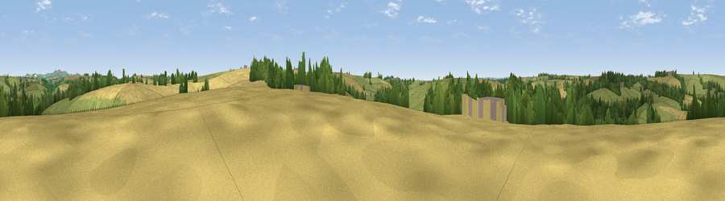

Viewpoint near Tregony
#35493 in England · top 67% of its area beats it · near TregonyWhere it is
The exact computed spot (SW 91325 43425). Click the marker for map links.
The view, rendered

A 360° render of this exact spot computed from the terrain model, tree cover and land cover — summer colours, afternoon light, calibrated against photographs of famous viewpoints. Real trees, hedges and buildings will differ in detail.
The panorama
Grey silhouette: terrain skyline in each direction (720 bearings, Earth curvature and refraction included). Dashed green: skyline with trees (+15 m) and buildings (+8 m) as obstacles. Blue strip: how far the ground is visible on each bearing.
Where the view opens
Wedge length = distance to the farthest visible ground on that bearing (vegetation-aware). Rings at 10, 25 and 50 km.
What fills the view
46% grassland · 31% cropland · 22% woodland ·
Angular shares of the visible panorama (visual magnitude), not map area. Landscape diversity 0.47 (0–1 Shannon).
Key numbers
More beautiful places nearby
The staircase of upgrades: each row has a higher view potential than everything closer. Driving times are estimates from straight-line distance, calibrated against real road routing — check an actual route before setting out.
| Place | Direction | Drive | Score |
|---|---|---|---|
| Viewpoint near Ruan Lanihorne | WSW · 1 km | ~3 min | 41.0 |
| Viewpoint near Tregony | N · 2 km | ~5 min | 43.1 |
| Trebollack Hill | W · 3 km | ~6 min | 47.0 |
| Viewpoint near Ruan Lanihorne | WSW · 3 km | ~8 min | 51.0 |
| Viewpoint near Portloe | SE · 4 km | ~10 min | 68.5 |
| Viewpoint near Portloe | SSE · 5 km | ~11 min | 69.4 |
| Viewpoint near Portloe | ESE · 5 km | ~12 min | 74.4 |
| Viewpoint near Gorran Haven | E · 10 km | ~19 min | 77.0 |
50.25387, -4.92867 · source: screening · position refined by local search. Computed location — check access rights before visiting.